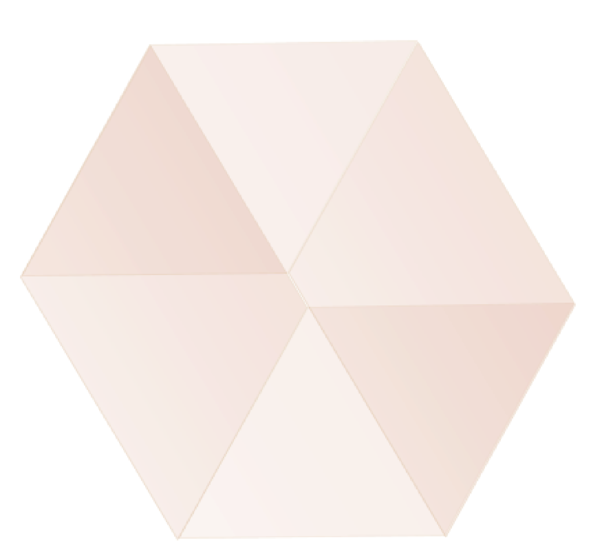

Build amazing things
Essential JavaScrip development tools that help you go to market faster and build powerful applicatios using modern open source code.

Bring the best of open souerce to your company
npm is the tool used by over 1.000.000 JavaScrip developers around the world. Ypur developers already use it.Your company depends on it. Create an Org and get more out of the tools your team already knows and loves.
Zero configuration
Create an org, add your team, and star collaborating.
Nothing to configure, set up, or manage.
Team management
Control who has access to what modules within your team namespace using straightforward team management capabilities
Familiar features
npm Orgs has 100% parity with all the public npm registry features your developers already use.
npm audit
Enjoy the security auditing features built into the npm client, a zero-friction way to maka open source software safer.